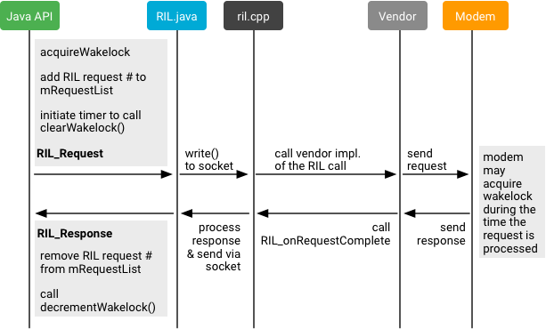
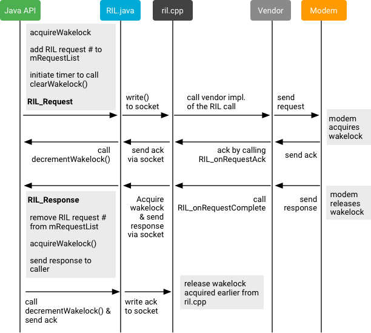
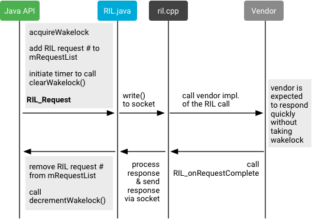
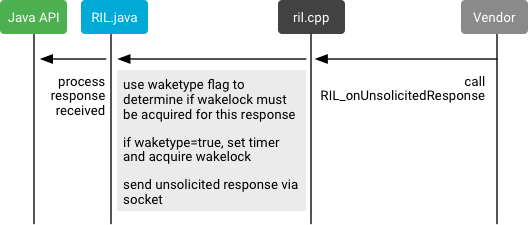
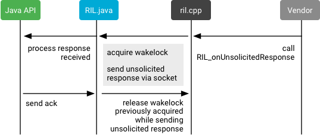

Android 7.0 refactored the Radio Interface Layer (RIL) using a set of features to improve RIL functionality. Partner code changes are required to implement these features, which are optional but encouraged. Refactoring changes are backward compatible, so prior implementations of the refactored features continue to work.
RIL refactoring includes the following improvements:
GENERIC_FAILURE code. This aids in
error troubleshooting by providing more specific information about the cause of
errors.You can implement any or all of the above improvements. For more details,
refer to code comments on RIL versioning in
https://android.googlesource.com/platform/hardware/ril/+/master/include/telephony/ril.h.
Almost all RIL request calls can return the GENERIC_FAILURE
error code in response to an error. This is an issue with all solicited
responses returned by the OEMs, which can make it difficult to debug an issue
from the bug report if the same GENERIC_FAILURE error code is
returned by RIL calls for different reasons. It can take considerable time
for vendors to even identify what part of the code could have returned a
GENERIC_FAILURE code.
In Android 7.x and higher, OEMs can return a distinct error code value
associated with each different error that is currently categorized as
GENERIC_FAILURE. OEMs that do not want to publicly reveal their
custom error codes can return errors as a distinct set of integers (such as 1 to
x) mapped as OEM_ERROR_1 to OEM_ERROR_X. Vendors
should ensure each such masked error code returned maps to a unique error reason
in the code. Using specific error codes can speed up RIL debugging whenever
generic errors are returned by the OEM, as it can often take too much time to
identify the exact cause of a GENERIC_FAILURE error code (and
sometimes it's impossible to figure out).
In addition, ril.h adds more error codes for the enums
RIL_LastCallFailCause and RIL_DataCallFailCause so
vendor code can avoid returning generic errors such as
CALL_FAIL_ERROR_UNSPECIFIED and
PDP_FAIL_ERROR_UNSPECIFIED.
After adding new error codes to replace the GENERIC_FAILURE
code, verify the new error codes are returned by the RIL call instead
of GENERIC_FAILURE.
RIL versioning in older Android releases was problematic: the version itself was imprecise, the mechanism for reporting a RIL version was unclear (causing some vendors to report an incorrect version), and the workaround for estimating the version was prone to inaccuracy.
In Android 7.x and higher, ril.h documents all RIL version
values, describes the corresponding RIL version, and lists all changes for that
version. When making changes that correspond to a RIL version, vendors must
update their version in code and return that version in
RIL_REGISTER.
Verify that the RIL version corresponding to your RIL code is returned
during RIL_REGISTER (rather than the RIL_VERSION
defined in ril.h).
Timed wakelocks are used in RIL communication in an imprecise way, which negatively affects battery performance. In Android 7.x and higher, you can improve performance by classifying RIL requests and updating code to handle wakelocks differently for different request types.
RIL requests can be either solicited or unsolicited. Vendors should further classify solicited requests as one of the following:
RIL_REQUEST_GET_SIM_STATUS.RIL_REQUEST_QUERY_AVAILABLE_NETWORKS.
Asynchronous solicited RIL requests can take considerable time. After receiving an ack from vendor code, RIL Java releases the wakelock, which might cause the application processor to go from idle to suspend state. When the response is available from vendor code, RIL Java (the application processor) re-acquires the wakelock, processes the response, then returns to idle. Such moving from idle to suspend to idle can consume a lot of power.
If the response time isn't long enough, holding the wakelock and staying in idle for the entire time it takes to respond can be more power efficient than going into suspend state by releasing the wakelock and waking when the response arrives. Vendors should use platform-specific power measurements to determine the threshold value of time T when the power consumed by staying in idle for the entire time T is greater than the power consumed by moving from idle to suspend and to idle in same time T. When time T is known, RIL commands that take more than time T can be classified as asynchronous and the remaining commands classified as synchronous.
The following diagrams illustrate common RIL communication scenarios and provide solutions for modifying code to handle RIL solicited and unsolicited requests.
Note: For implementation details on functions
used in the following diagrams, refer to the acquireWakeLock(),
decrementWakeLock(), and clearWakeLock() methods in
ril.cpp.
In this scenario, if the RIL solicited response is expected to take
considerable time (i.e. a response to
RIL_REQUEST_GET_AVAILABLE_NETWORKS), the wakelock is held for a
long time on the application processor side. Modem problems can also result in a
long wait.

Solution 1: The modem holds the wakelock for the RIL request and asynchronous response.

Note: The wakelock timeout duration for the request-ack sequence would be smallerthan the currently used timeout duration because the ack should be received fairly quickly.
ril.cpp, which then releases the wakelock
acquired in step 3.Solution 2: The modem does not hold the wakelock and the response is quick (synchronous RIL request and response). The synchronous vs. asynchronous behavior is hardcoded for a specific RIL command and decided on a call-by-callbasis.

acquireWakeLock() on the
Java side.decrementWakeLock() is called, which decreases wakelock counter
and releases wakelock if the counter value is 0.In this scenario, RIL unsolicited responses have a wakelock type flag in the that indicates whether a wakelock needs to be acquired for the vendor response. If the flag is set, a timed wakelock is set and the response is sent over a socket to the Java side. When the timer expires, the wakelock is released. The timed wakelock could be too long or too short for different RIL unsolicited responses.

Solution: An acknowledgement is sent from the Java code to
the native side (ril.cpp) instead of holding a timed wakelock on
the native side while sending an unsolicited response.

Verify that RIL calls are identified as synchronous or asynchronous. Because battery power consumption can be hardware/platform dependent, vendors should do some internal testing to find out if using the new wakelock semantics for asynchronous calls leads to battery power savings.